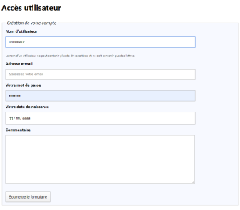

Vous êtes chargé d'améliorer le formulaire de création de compte utilisateur, dont vous trouverez le code ci-dessous :
See the Pen Untitled by OpenSpirit (@OpenSpirit) on CodePen.
Vous disposez d'un certain nombre de messages de contraintes propres à chaque élément du formulaire.
Dans un premier temps, associez ces contraintes à chacun des champs du formulaire. Vous pourriez vous aider du console.log présent dans le script de base.
Par défaut, ces contraintes doivent être masquées. La contrainte concernée s'affichera uniquement lorsque l'utilisateur placera le focus sur ce champ, et disparaîtra s'il quitte le champ.
Vous prendrez soin de les faire apparaître lentement.
Attention, vous n'êtes pas chargé de valider les données du formulaire, seulement de gérer l'affichage.
La fonction next pourrait vous être utile.
La fonction attr pourrait vous être utile.
See the Pen Untitled by OpenSpirit (@OpenSpirit) on CodePen.
Rendez ce formulaire plus agréable à la lecture en modifiant les éléments suivants :
See the Pen Untitled by OpenSpirit (@OpenSpirit) on CodePen.